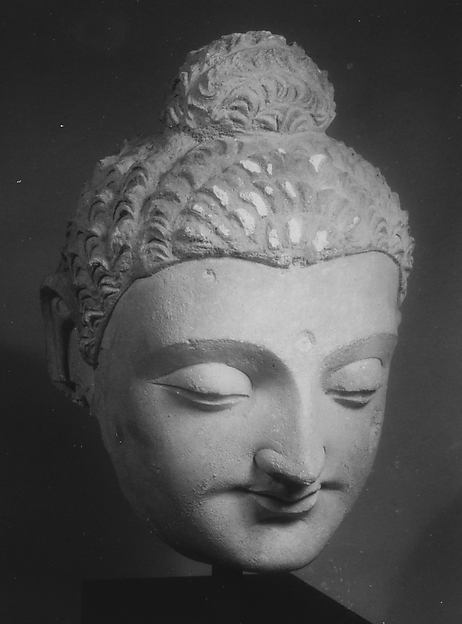

DEEP ARTICLE
悲
悲は他者の苦しみに向き合う。他者の苦を見て、それが和らぐことを願う心です。

まず、何を意味するのか
他者の苦を見て、それが和らぐことを願う心です。
大乗仏教では菩薩の重要な徳としてさらに大きく展開しました。
歴史と文脈
大乗仏教では菩薩の重要な徳としてさらに大きく展開しました。
仏教用語は時代や学派によって意味の幅が変わります。このページでは、初期仏教・大乗仏教・日本仏教を同じ時代の同一概念として混ぜずに整理します。
よくある誤解
他人の苦しみを全部背負うことや、自己犠牲を無制限に続けることとは異なります。
短い名言やSNS向けの要約だけで理解すると、背景にある実践や思想史が抜け落ちます。言葉だけでなく、その語が使われた文脈を見ることが重要です。
現代の生活でどう読むか
共感と境界線を両立しながら、必要な助けを選ぶ姿勢として現代にもつながります。
仏教の教えは、単に「信じるべき結論」としてではなく、自分の経験を観察するための仮説として読むと実用性が高まります。
DEPTH NOTES
悲とはをもう一段深く読む
悲とはは、単独の標語ではなく、経典・歴史・実践の文脈の中で読むことで意味が立体的になります。
他の教えとのつながり
仏教実践は、気分を一時的に良くするテクニックだけではありません。倫理、注意、集中、智慧、人との関わり方まで含む長期的な訓練として位置づけられます。
実践の効果を急ぐと、「怒らない自分」「不安のない自分」を新たな理想像として握りしめることがあります。仏教的な観察では、うまくできない反応そのものも観察対象に含めます。
実践・読み方のポイント
また、瞑想や慈悲の実践は万能ではありません。強い心理的負担や医療的問題がある場合、宗教実践だけで解決しようとせず専門的支援を利用する判断も必要です。
日常では短時間でも、行動の直前に身体・感情・意図を確認するだけで実践になります。特別な場所より、繰り返し起きる反応の現場を観察できるかどうかが重要です。